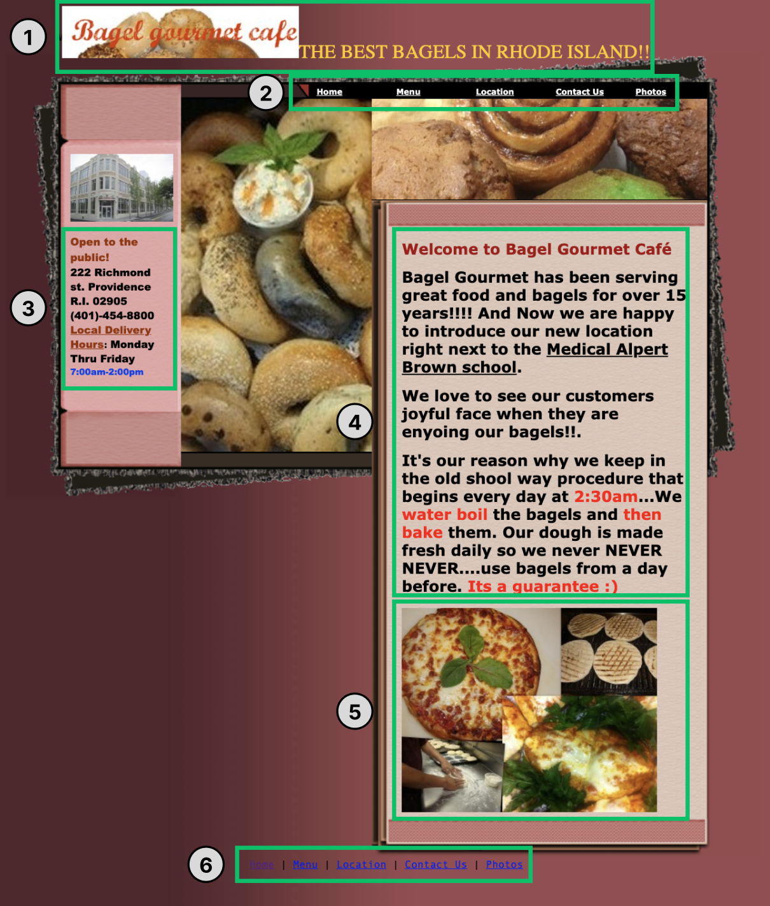

Page Overview
Ever looked at a website and thoughts to yourself what is going on? Whether it be cluttered text, disorganized hierachy, there are many aspects of a website's design that can hinder it's usability. This project focused on re-designing Bagel Gourmet's website to make it more user friendly. More specifically, the website was re-designed to be more usable, learnable, and memorable.
Part 1: Identifying Usability Problems
Findng Problems
Before re-designing the Bagel Gourmet Café website, I did an analysis of how the current website could be improved. Here is a screenshot of the current website:
Here are problems I identified when using the website categorized by usability, learnability, and memorability:
Usability
- Users might expect hyperlinks to be underlined text, but the underlined text doesn’t hyperlink to anything in (4)
- There are 2 navigation bars [(2) and (6)], however, (6) has no utility since it’s the same exact thing as 2 and is not visible. (6) could perhaps be made more visible by changing the color of the bottom of the webpage.
- There’s a lack of clear hierarchy. For example:
- In (1) the logo is next to subtext which hinders the BGC logo from standing out.
- The navigation bar is only spans the right side of the page (why not have it extend the entire page instead)
- People usually read left to right and top to bottom. Thus, the hours and contact information on the left might be the first thing a user reads. However, a user should be given an introduction to what Bagel Gourmet Café is before reading what their hours are.
- Photos in 5 are randomly scattered without clear layout or hierarchy
- There’s a lot of blank, unused space. The right side (4 and 5) extend past the left side, creating unused, blank space on the bottom left.
- The background is quite dark, which can make the text on the bottom hard to read (6)
Learnability
- Text coloring has no impactful meaning; for example in (3) the coloring is quite random and in the main body of text (hours are in blue, random works are in red) which can confuse users. This makes it hard for a user to associate types of text with a color, making the website less learnable. Perhaps all headers should be red and all subtext should be black.
- Font use:
- Bolding: all of the text is bolded, when bolding should be used selectively to highlight key messaging.
- Underline: Underlining should be reserved for hyperlinks (given that users are used to this formatting and everything in the nav bar (2) is underlined). However, “Medical Alpert Brown School” is underlined.
Memorability
- Lack of a simple logo (1) makes the website (and brand) less memorable
- Inconsistent branding and messaging can confuse the user and make the website forgettable; if this is a bagel store, why are there photos of pizza (5)? According to the menu, they do not sell pizza
- There are at least 4 different fonts on this page, making it less memorable (inconsistent branding)
Accessibility
In addition to analyzing the website on my own, I used WebAIM Wave to identify accessibility issues. The website indicated that there were 12 contrast errors, 20 alerts (for things including but not limited to underlined text, very small text, missing headings), missing/uninformative page title, and more. I agreed with almost all of the results indicated. Underlined text should be reserved for hyperlinks as to not confuse users, the text size varied quite a bit throughout the webpage and was quite small in some areas. Moreover, there was a lack of hierachy caused by the lack of headers and layout problems. However, the biggest issue with accessibility in my opinion is the last of contrast issue. The background color of the website was a dark maroon gradient, which didn't contrast well with the text. This can especially be seen in the bottom navigation menu as well as on the left hand text panel.
Part 2: Visual Redesign
Lowfi Prototypes
Above are 3 lowfi prototypes of a re-designed bagel gourmet website that adress the usability issues outlined above. More specifically:
- Usability: There is a clear hierachy of materials; each section is clearly marked and does not overlap with each other. Moreover, underlining is strictly reserved for hyperlinked text. Although not reflected in the lowfi prototype, the background will be a lighter color.
- Learnability: Although not reflected in the lowfi prototype, changing the color of text will be used selectively and all text of the same hierarchy (headings, body text, etc.) will be the same color and font size. Bolding and underlining will also be used selectively.
- Memorability: There will be better branding of BCG. The website will be in one font.
Visual Design Style Guide
The below is a visual design guide used to create highfi prototypes. However, because of the simplicity of the website, there are relatively few elements here:

Highfi Prototypes
Desktop
Here is a high-fi prototype for desktop users:
Tablet
The tablet web layout should be identical to that of the desktop. This is because the elements of the website are relatively simple and spaced out, thus, the change in dimension should not affect the usability. Moreover, all of the font sizes will be in relative as opposed to absolute units, so it will resize based on screen size.
Mobile
Although many of the elements of the mobile version of this website are the same as the desktop, the biggest differences are with the grid layout and navigation bar. Instead of having a 2 column grid, everything will be laid out in a 1 column grid given how narrow a mobile phone is. Moreover, the nav bar will collapse into a hamburger menu again because of width restrictions on a phone. Because all elements of the website should be sized with relative units (either rem or percentages), these will also remain consistent across the desktop and mobile. Here is a high-fi mobile prototype:
Part 3: Responsive Redesign
Conclusion
Completing this project taught me a lot about how to most effectively design a website! As an avid lover of bagels, I had previously not realized how ineffective the previous website was. However, through this process I was able to learn about how to reoganize the hierachy of a website to be most user friendly, how to leverage color and font style to organize a webpage, and how to empathize with users. Moreover, I also learned how important prototypes are for creating a webpage, as creating lowfi and highfi prototypes streamlined the process of coding the new Bagel Gourmet Café website.